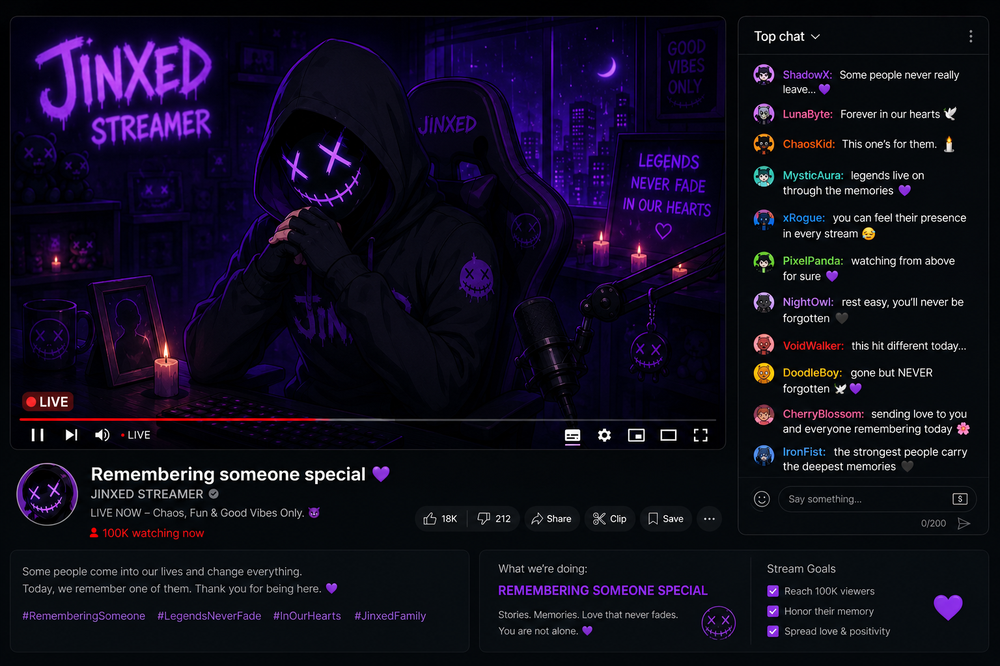

CHAPTER 02

You made it further than most people would have. Congratulations. You cleared the first round.
That means you're paying attention. Or maybe it means you care more than you should.
Back when all of this started, my viewers loved games like this. Little puzzles hidden inside streams. Tiny clues buried beneath jokes and conversations.
Most people never noticed anything. They came for noise. For entertainment. For something to fill the silence in their rooms before they slept.
But you noticed... and stayed.
That matters more than you think.
I used to believe memory was a comforting thing. That remembering someone meant they could never truly disappear.
I was wrong.
Memory rots.
Every stream started blending together after a while.
Same microphone. Same room. Same glowing monitor light burning into my eyes at three in the morning.
But there are certain things I still remember perfectly. I remember the exact night they first joined my stream.
“You look tired.”
That was the first thing they ever said to me.
Such a small message. But nobody had ever spoken to me like that before. Not Jinxed the streamer.
Just... me.
After that, they kept showing up every night. And somehow... I started depending on it.
I delayed streams waiting for them. Reread old chats after streams ended. Checked notifications hoping one of them would finally be theirs.
Pathetic, right? Maybe.
But loneliness makes even the smallest attention feel dangerous. Especially when it becomes the only thing you look forward to.
Somehow, I could always find their messages instantly. Thousands of people talking at once. Yet my eyes always searched for them first. Like part of me already belonged to them.
That's the strange thing about memory. You don't choose what stays.
Sometimes your brain keeps the wrong things forever.
A username. A typing pattern. The exact time someone leaves without saying goodbye.
And once you start noticing those things...
You can't stop.
People started getting uncomfortable around me.
Viewers made clips. Threads. Theories.
They thought it was creepy how much I remembered.
Maybe they were right.
But none of them understood what it felt like when that one person suddenly stopped appearing.
At first, I told myself they were busy. Then I started checking every stream archive to make sure I hadn't missed them somehow.
But they never came back. And I still kept waiting.
Still pretending everything was normal while staring at the chat box like a lost idiot waiting for a ghost to come home.
Tell me something.
Do you remember people easily? Or do they fade after a while?
Because I remember everything.
Every message. Every absence. Every second spent waiting.
And somehow... I think you're starting to remember me too.